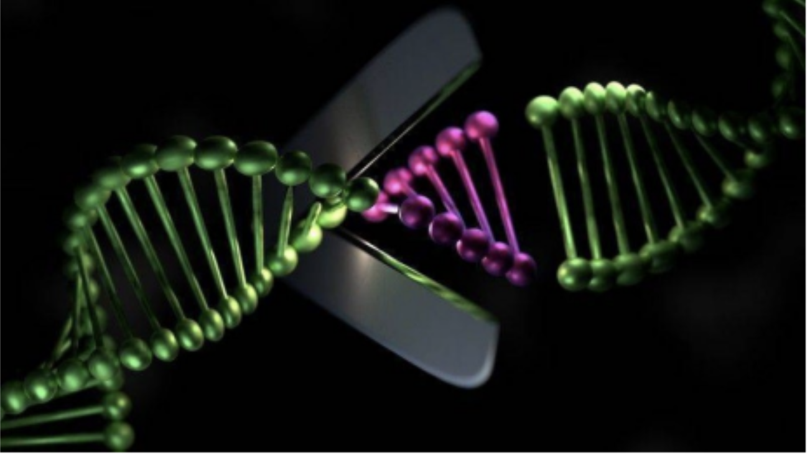
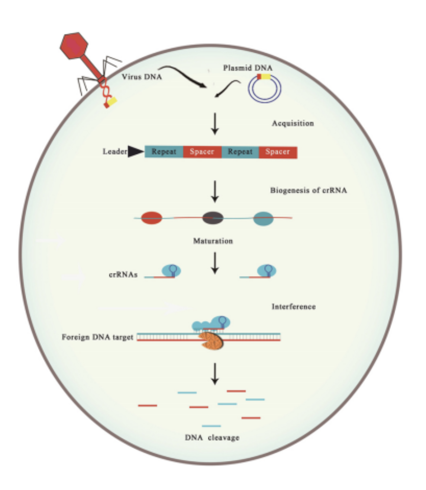
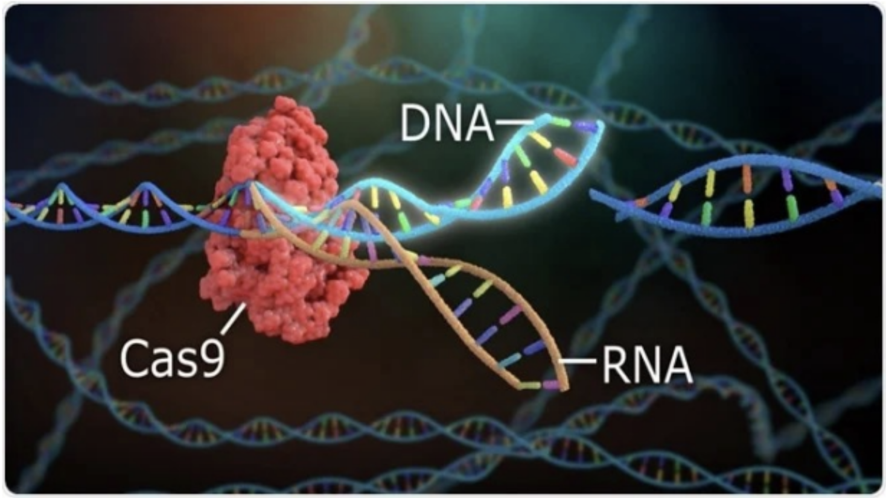
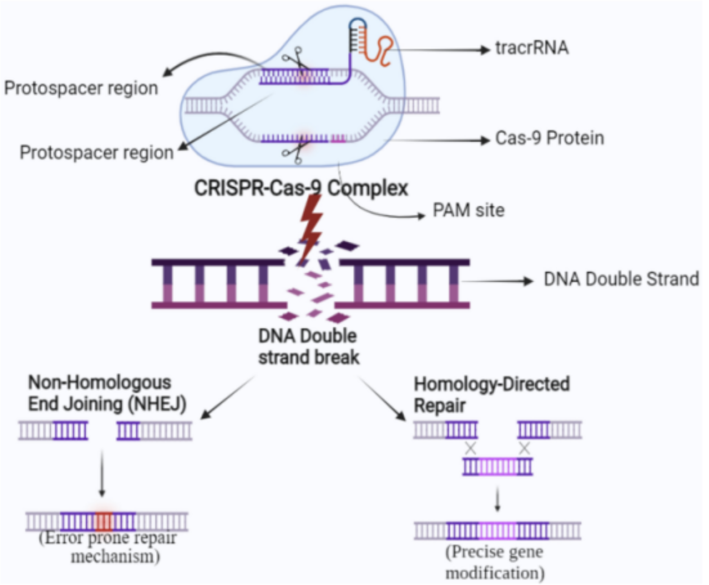

Genetics • Biotechnology
CRISPR-Cas9 Technology - An Overview
What is it?
The CRISPR-Cas9 technology works like “molecular scissors” that can cut DNA to disable or correct a faulty gene by correcting or removing the mutation in that gene. It is the most common method of gene editing being researched to treat mendelian/monogenic disorders (these are caused by a mutation in a single gene that follow Mendel’s patterns of inheritance) and prevent them from being passed down to future generations, but could also be used to cure more complex diseases like cancer; improve crops; control pests, pathogens (e.g. HIV) and vectors (e.g. mosquitoes); and even enhance or alter physical traits.

How does it work?
CRISPR Cas-9 technology is based on the bacterial antiviral defence system CRISPR-Cas. When the bacterium gets attacked by a virus, the “Acquisition” or “Adaptation” stage of the system takes place - the bacterium captures and then inserts fragments of the viral DNA called spacers in between sections of its own repeated DNA called Clustered Regularly Interspaced Short Palindromic Repeats (CRISPR) into its CRISPR locus (a region of the genome that acts as an adaptive immune system in bacteria and archaea).
Then “Biogenesis” or “Expression” happens and this is where the entire CRISPR locus gets transcribed into a long RNA molecule called pre-crRNA (precursor crRNA). The next part of the process is making RNP (ribonucleoproteins) - which are the structures that scan DNA, enabling the target to be found and cut later - and how they are made depends on what system the bacterium uses (there are six overall). In almost all Type I systems, the Cas6 (CRISPR-associated 6) protein severs the pre-crRNA into small mature crRNA (CRISPR RNA) molecules that contain a single spacer sequence (the fragments of viral DNA that will enable targeting specificity in the defence system) placed between the repeats (parts of the bacterium’s own DNA). These mature crRNA molecules then bind to many copies of several different Cas proteins like Cas5, Cas6, Cas7 etc. which form the Cascade complex (a large RNP). However, in Type II systems, tracrRNA (trans-activating CRISPR RNA) which is made separately binds to the repeats of the pre-crRNA which forms dsRNA (double-stranded RNA). A Cas protein (in Type II (Cas9) systems this protein will be Cas9) then binds to the dsRNA and stabilises the complex. Next, a bacterial enzyme called RNase III recognises the complex and cuts the pre- crNA into mature crRNA molecules, which stay bound to the tracrRNA and Cas protein, and the RNP is formed. The RNP consists of two parts - the gRNA (guide RNA) which is the crRNA and tracrRNA, and the Cas protein.
In the event of re-infection, the “Interference” stage occurs. In both Type I and II, the RNP (Cascade complex guided by crRNA in Type 1 and Cas protein guided by gRNA) scans DNA until it finds specific PAM (Protospacer Adjacent Motif) sequences. The PAM is vital as it prevents autoimmunity - only the foreign/viral DNA has a PAM next to the protospacer so only the foreign DNA is targeted by the defence system. Once found, it binds to PAM and then checks if the DNA next to them are complementary to the spacers in either the crRNA or gRNA. If they are, the DNA is identified as a protospacer (invading viral DNA) and is destroyed. In Type I, the Cas3 protein (which acts as a helicase and nuclease) unwinds and breaks many phosphodiester bonds between the nucleotides in the protospacer, whereas in Type II, Cas9 protein makes a DSB (double-stranded break) in the protospacer. This destruction of the protospacers disables the attacking virus by preventing it from replicating and infecting other cells, providing protection to the bacteria.


First Demonstration and Application
The CRISPR-Cas9 technology and the sgRNA concept were invented and demonstrated in vitro (in a test tube) by Doudna and Charpentier in 2012 (winning them the Nobel Prize in 2020) after the accidental discovery of CRISPR sequences by Ishino and then the linkage of these to the bacterial immune system by Mojica. The first successful application of the technology on living mouse and human cells was published in Science in 2013 by Zhang and Church. The technology works similarly to the Type II bacterial defence system explained previously, but the main difference is that the tracrRNA and crRNA is made into sgRNA (single guide RNA). This molecule is synthesised to match a specific target sequence (section of a gene which is still sometimes called a protospacer even though all DNA is ‘self’) so the Cas9 protein can find it in the cell’s DNA and make a DSB/cut in it (by first finding and binding to the PAM next to it). Depending on what the researchers want to do to the gene, they either use NHEJ (Non-Homologous End Joining) or HDR (Homology-Directed Repair) which are different versions of the cell’s own repair system. If the mutated gene must be disabled then NHEJ is used as it causes indels (random small insertions and/or deletions of nucleotides), but if the mutation in the gene must be corrected then HDR can be used in the presence of donor DNA so that the healthy donor sequence can replace the mutated sequence.
